Hlavní zjištění
- Dva vizuální světy. Obrazovky z TimeLogu (Historie, připomínky, záznam, dialogy) mají šedé karty s obrysem, tužku a koš v každé kartě a formuláře ve vystředěném dialogu. Obrazovky z QuestLogu mají bílé karty, sheety a velká tlačítka. Tohle je nejviditelnější stopa sloučení.
- Pět způsobů, jak jít zpět: „‹ Mise“ jako odkaz, „‹“, „←“, „✕“ a hamburger uprostřed obrazovky ve složce poznámek.
- Sheety mají dvě podoby: „Zrušit“ vlevo nahoře s obřím vystředěným nadpisem, nebo nadpis vlevo bez zavírání.
- Chyby: useknutý nadpis „Home Screen shor…“, ve složce poznámek je hamburger pod drobečkovou navigací a zdvojený název v detailu události.
Jak to řeším
- Všechno přechází na jeden vzor, odvozený z obrazovek, které jsme už odsouhlasili (QuestLog styl plus úpravy z kol 1 a 2).
- Vznikl seznam 12 pravidel konzistence. Podle nich se budou upravovat i obrazovky bez náhledu a stejný seznam půjde do specu pro implementaci.
- Náhled má 10 obrazovek, kde je změna nejvíc vidět. Dvě z nich mění i chování a jsou označené ZMĚNA CHOVÁNÍ, ty potřebují tvůj souhlas zvlášť.
Pravidla konzistence
Na těchhle pravidlech stojí všechny náhledy níže i všechny obrazovky bez náhledu.
Vlevo menu (když je drawer zapnutý) nebo zpět, vpravo nejvýš dvě tónovaná ikonová tlačítka. Pod titulkem případně podtitulek (datum, počet). Žádné obří 48px nadpisy.
Nikdy textový odkaz „‹ Mise“. Obrazovka otevřená „přes“ jinou (detail události) má ✕. Drobečková navigace jen jako podtitulek.
Detaily, editory a podstránky Nastavení ji nemají, mají celou výšku pro obsah (jako dnes detail mise).
Položky stejného druhu jsou v jedné kartě. Samostatná karta je jen pro souhrn (úroveň, profil, dlaždice čísel).
Jako dnes u questů. Žádná tužka a koš v každé kartě.
Formuláře jsou vždy v sheetu, nikdy ve vystředěném dialogu. Žádné „Zrušit“ vlevo nahoře.
Nadpis, jedna věta, dvě stejně velká tlačítka vedle sebe: Zrušit (tónované) a akce (accent, u mazání červená).
Typ aktivity a události barvou typu s barevnou tečkou, ostatní accentem. Bez tlusté obrysové čáry.
Popisek malým písmem nad hodnotou, aktivní pole má accent rámeček. Stejné ve všech formulářích.
V accent barvě, uvnitř seskupené karty, místo čárkovaného boxu.
Hlavní je accent s jemnou září, vedlejší tónované, destruktivní červené. Obrysová tlačítka se nepoužívají.
Ikona v tónovaném kruhu, krátký text a případně hlavní tlačítko. Stejně ve všech modulech.
Historie, záznam a potvrzení
Historie
ZMĚNA CHOVÁNÍ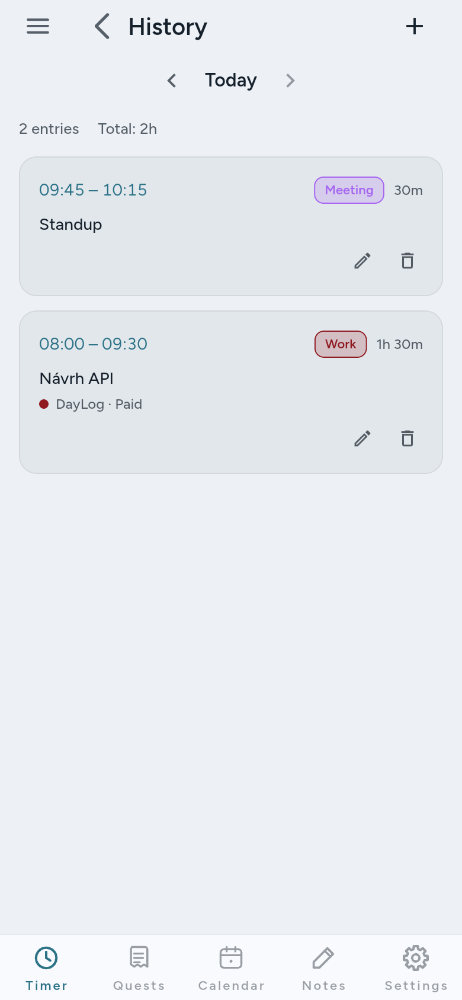
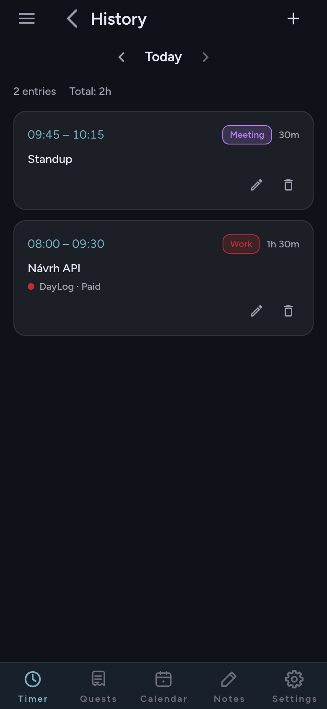
- Záznamy jsou jedna seskupená karta: čas od–do vlevo, barevný proužek typu, název, štítek typu a délka vpravo. Den se dá přečíst jako časová osa.
- Souhrn dne (počet záznamů, celkem) jako dva štítky pod navigací dnem, stejně jako ve Statistikách.
- Změna chování: tužka a koš v každé kartě zmizí. Klepnutí na záznam ho otevře k úpravě, tažení doleva ukáže Upravit / Smazat, stejně jako u questů (pravidlo 05). V náhledu je první řádek zobrazený vytažený.
- Historie je záložka modulu, takže nemá šipku zpět. Plus pro nový záznam je vpravo nahoře.
Sheet záznamu
„Co jsi udělal?“, přidání i úprava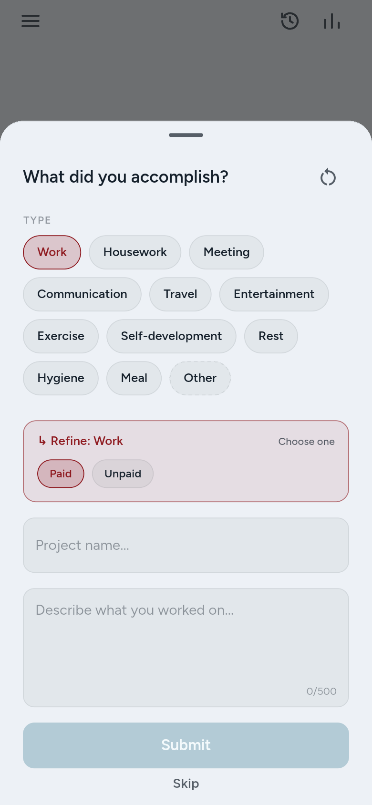
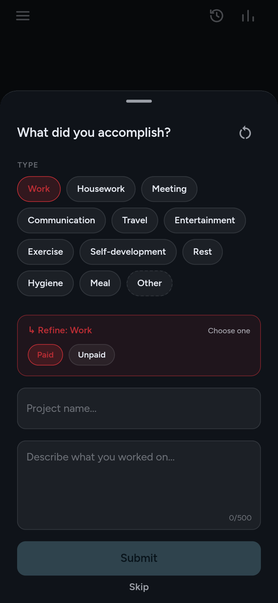
- Typy mají barevnou tečku, takže barvu typu poznáš už při výběru, ne až ve statistikách.
- Vybraný typ je tónovaný svou barvou a nemá obrys (pravidlo 08).
- Upřesnění (Placená / Neplacená) je segmentový přepínač v tlumeném panelu, ne druhá řada tabletek v růžovém rámečku.
- Pole projektu a popisu jsou bílé karty s rámečkem (pravidlo 09). Stejný sheet slouží pro přidání a úpravu záznamu v Historii.
Potvrzovací dialog
reset, mazání všude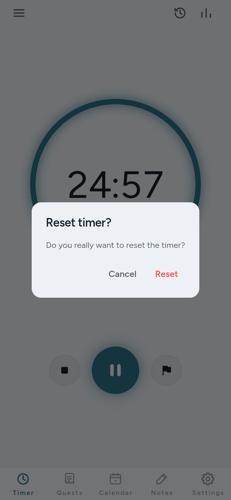
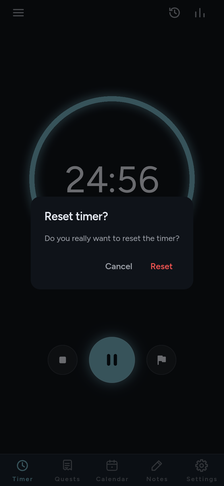
- Jeden vzor pro všechna potvrzení v aplikaci: reset časovače, smazání záznamu, questu, mise, události, připomínky i vysypání koše.
- Dvě stejně velká tlačítka. Destruktivní akce je červené tlačítko, ne jen červený text, takže se nedá splést.
- Ikona nahoře říká, že jde o vážnou věc. U nedestruktivních potvrzení (Vyvěsit hned) je ikona i tlačítko v accent barvě.
Mise a nový quest
Mise
záložka modulu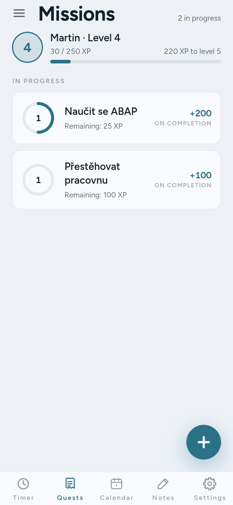
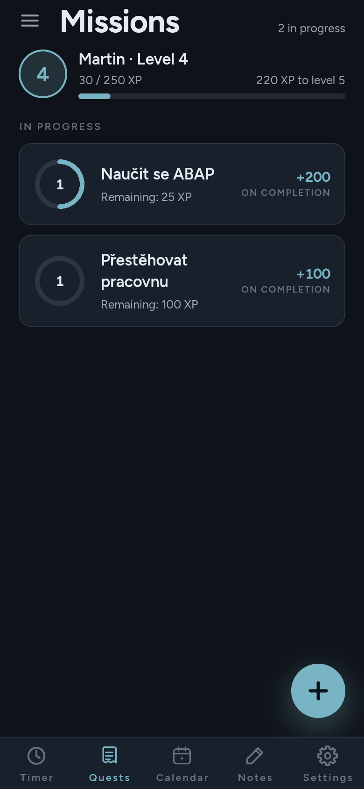
- Stejná karta úrovně jako na Nástěnce. Oba pohledy modulu Questy tak vypadají jako jedna rodina.
- Číslo v kruhu zůstává jako dnes: kolik questů ještě zbývá do splnění mise. Kruh kolem něj se plní podle postupu, takže je na první pohled vidět, která mise je skoro hotová.
- Bonus za dokončení je tabletka „+200 XP“ vpravo, bez kapitálek „ON COMPLETION“.
Detail mise
bez spodní lišty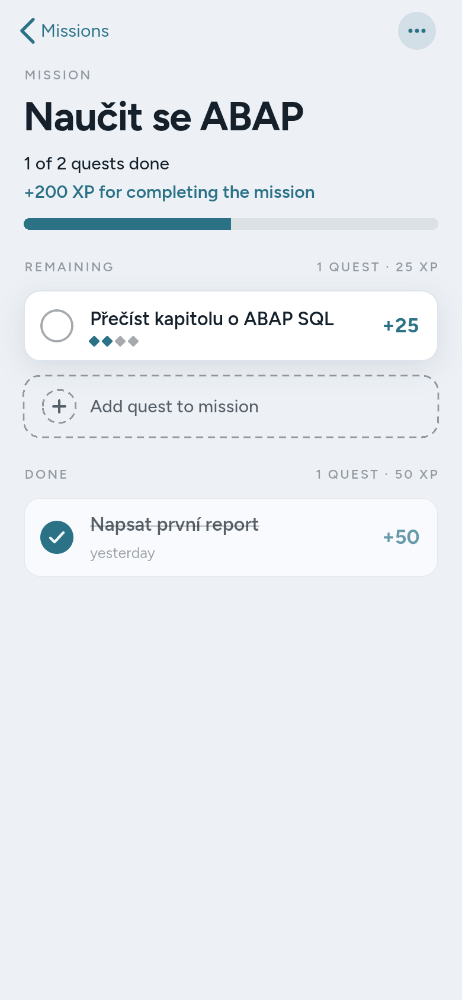
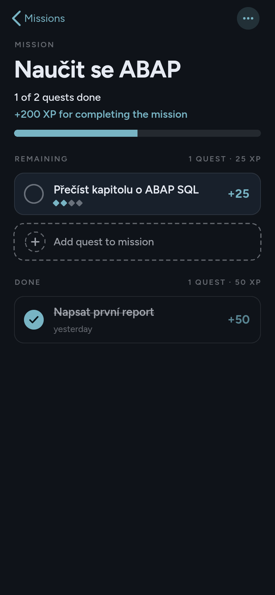
- Hlavička podle pravidel: šipka zpět, „Mise“ a menu ⋯. Název mise je 28 px místo 48 px a nevytlačuje obsah.
- Zbývající i splněné questy jsou seskupené karty. „Přidat quest do mise“ je řádek na konci karty (pravidlo 10).
- Splněný quest má plný kroužek s fajfkou a přeškrtnutý název. Stejně bude vypadat i v sekci „Splněno dnes“ na Nástěnce.
Nový quest
vzor pro všechny formulářové sheety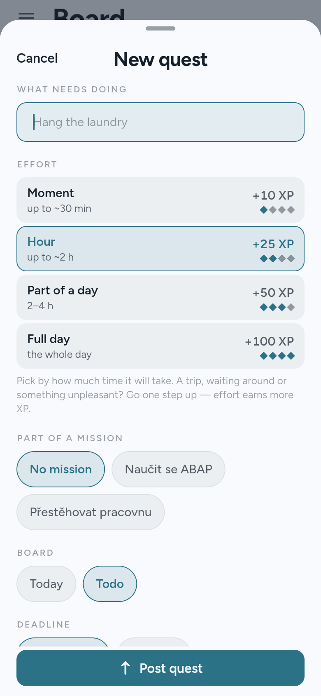
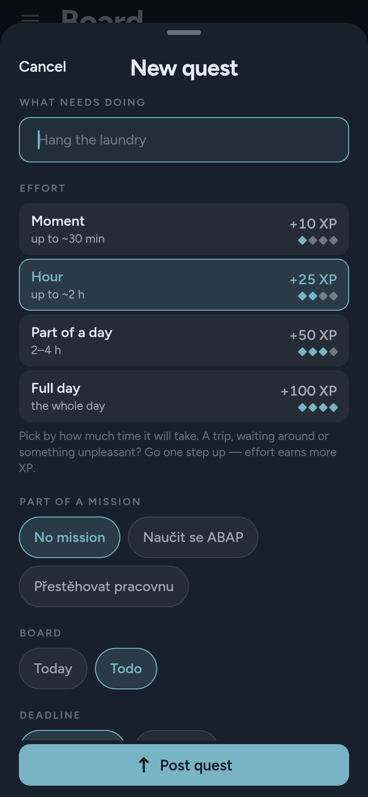
- Hlavička sheetu podle pravidla 06: nadpis vlevo a ✕. „Zrušit“ a vystředěný obří nadpis zmizí.
- Námaha jako mřížka 2×2 místo čtyř vysokých řádků. Celý formulář se tak vejde bez scrollování až po Nástěnku a hlavní tlačítko.
- Nástěnka (Dnes / Todo) je segmentový přepínač, protože se vybírá jedna ze dvou možností.
- Stejný vzor dostanou Upravit quest, Nová mise, Pravidelná mise a Nová událost.
Seznam a složka
Poznámky
záložka modulu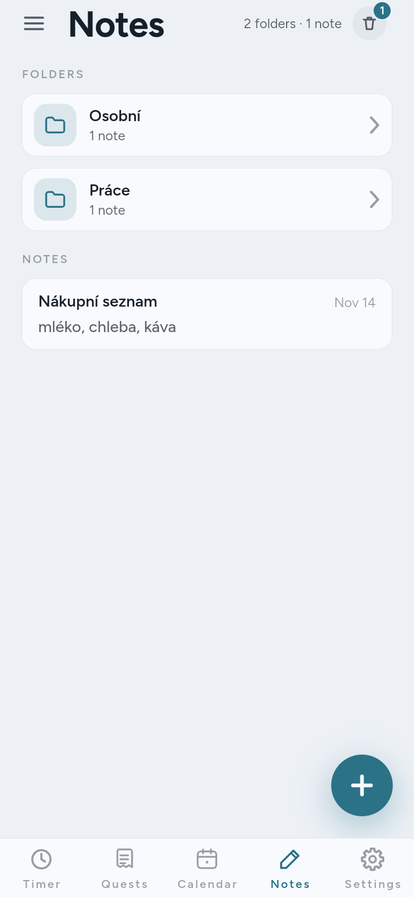
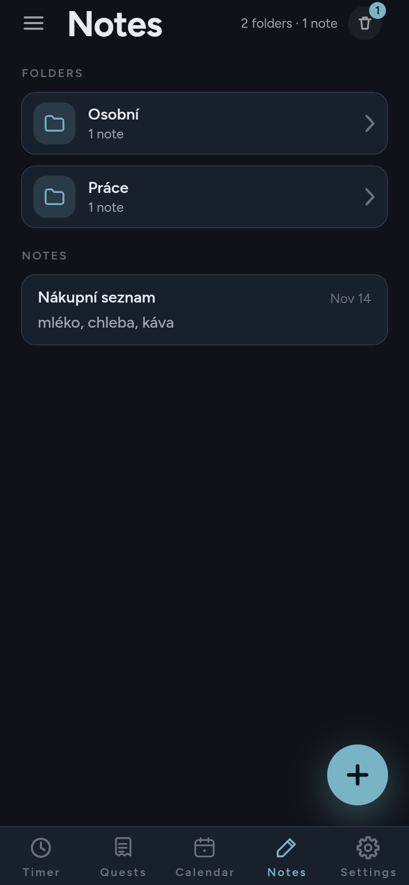
- Složky i poznámky jsou seskupené karty. Počet poznámek ve složce je vpravo, takže se názvy čtou jako seznam.
- Souhrn „2 složky · 1 poznámka“ je pod titulkem, ne vedle něj. Koš je tónované ikonové tlačítko s odznakem.
- Datum u poznámky je krátké (14. 11.) a náhled textu je pod názvem.
Složka
oprava hlavičky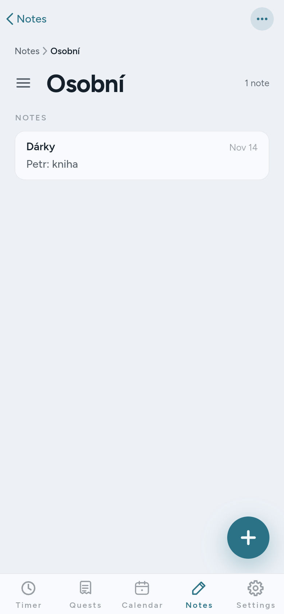
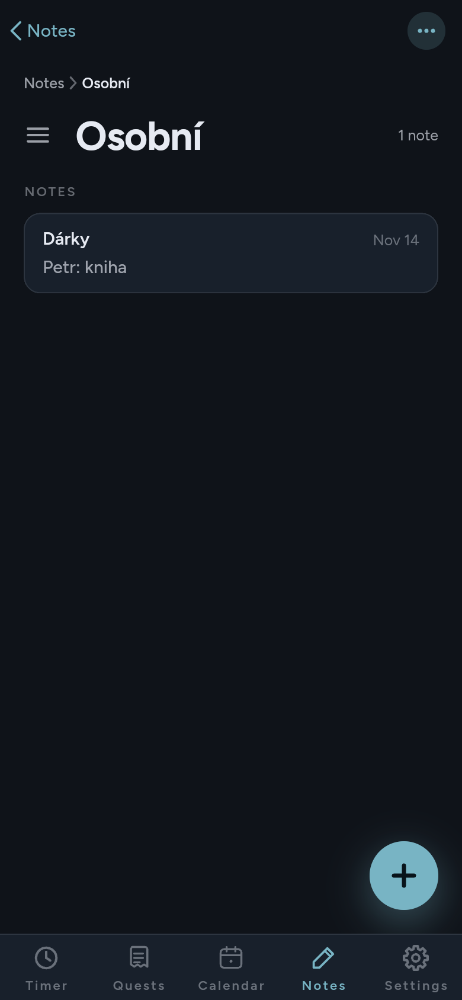
- Dnes jsou nad sebou tři úrovně navigace: „‹ Notes“, drobečky a pak hamburger s obřím titulkem. Nově jedna hlavička: zpět, název složky a menu ⋯.
- Drobečková navigace „Poznámky › Osobní“ je podtitulek. U hlouběji vnořených složek je pořád jasné, kde jsi.
- Spodní lišta zůstává, protože složka je pořád hlavní pohled modulu Poznámky.
Opakované připomínky
Seznam připomínek
ZMĚNA CHOVÁNÍ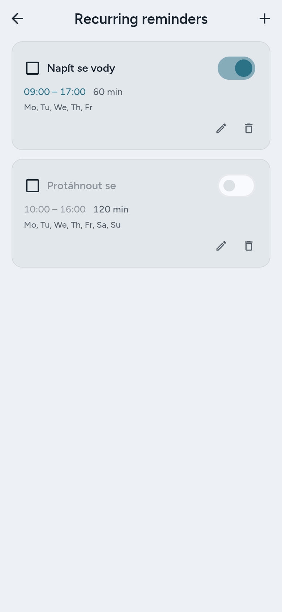
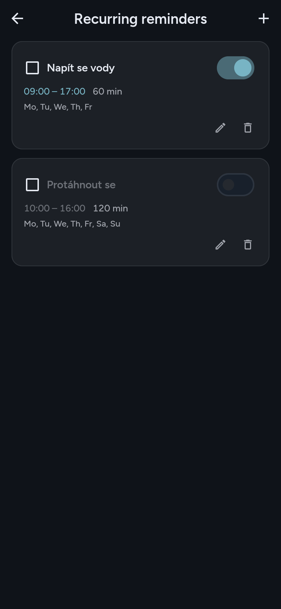
- Připomínky jsou řádky v seskupené kartě: kroužek „hotovo“ vlevo (dnes čtvereček), název, časové okno s intervalem, dny a přepínač Aktivní vpravo.
- Kroužek je stejný jako u questů, takže „označit jako hotové“ vypadá v celé aplikaci stejně.
- Neaktivní připomínka je ztlumená celá, ne jen její název.
- Změna chování: tužka a koš zmizí, stejně jako v Historii. Klepnutí otevře úpravu, tažení doleva nabídne Smazat.
Nová připomínka
ZMĚNA CHOVÁNÍ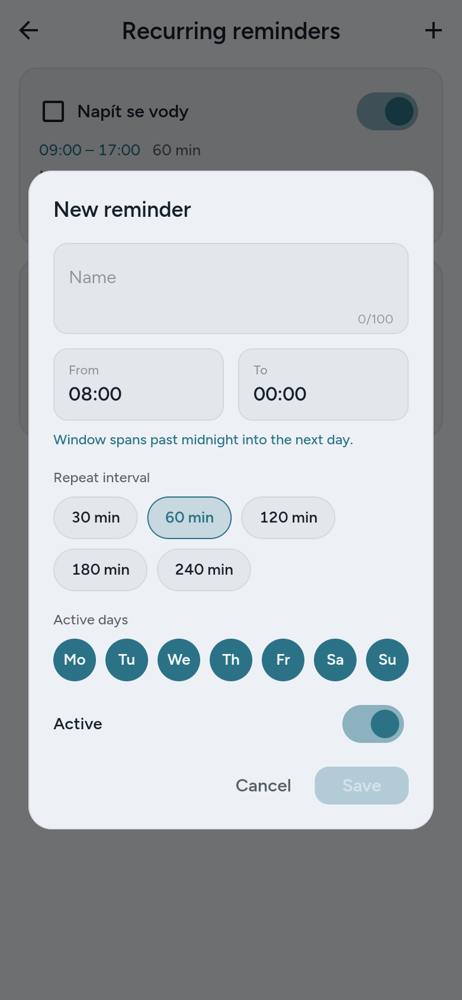
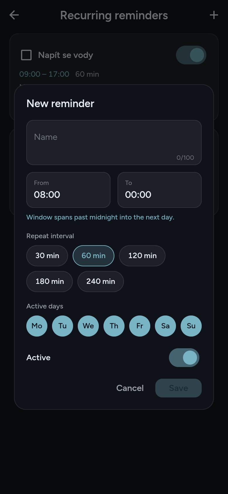
- Změna chování: formulář je sheet zespodu místo vystředěného dialogu (pravidlo 06), stejně jako všechny ostatní formuláře.
- Interval je segmentový přepínač v jedné řadě místo pěti tabletek ve dvou řadách.
- Pole Od a Do mají stejný vzhled jako ostatní pole a poznámka o půlnoci je pod nimi drobným písmem.
- Uložit je hlavní tlačítko přes celou šířku dole. Zrušení je ✕ nahoře nebo stažení sheetu dolů.
Ostatní obrazovky
Tady jen platí pravidla výše nebo vzor z některého náhledu. U každé obrazovky je napsané, čím se řídí, aby to bylo jasné i pro implementaci.
| Modul | Obrazovka | Jak bude vypadat |
|---|---|---|
| Časovač | Běžící, pauza, čas vypršel | Rozložení jako v klidu (kolo 2), jen play je pauza a vedlejší tlačítka mají plnou sytost. |
| Úprava a přidání záznamu | Stejný sheet jako „Co jsi udělal?“, nahoře přibudou pole Začátek a Konec (pravidlo 09). | |
| Smazání záznamu, reset | Potvrzovací dialog. | |
| Statistiky, týden | Jako den (kolo 2). Časová osa po dnech, popisky hodin jen jednou dole, ostré hrany bloků. | |
| Questy | Akce po přejetí | Beze změny chování. Upravit je tónované, Smazat červené, zaoblení jako u karty. |
| Splněný quest, Splněno dnes | Plný kroužek s fajfkou a přeškrtnutý název, jako v detailu mise. | |
| Upravit quest, nová mise, přidat quest do mise | Vzor „Nový quest“. | |
| Menu mise | Sheet s řádky (ikona + text), Smazat misi červeně a oddělené. | |
| Připraveno k dokončení | V detailu mise velké hlavní tlačítko „Dokončit misi“ nad seznamem. | |
| Odměna a nová úroveň | Zůstává, jak je. Je to nejoriginálnější místo aplikace. Jen nové barvy z tokenů, záře a tlačítko podle pravidla 11. | |
| Kalendář | Detail události | Zůstává celoobrazovkový s ✕. Název se už neopakuje v hlavičce, štítek typu je tlumený a tlačítko Upravit je hlavní tlačítko dole. |
| Nová a úprava události | Hlavička zpět + titulek + Uložit. Typy zůstávají v mřížce s tečkou (už teď odpovídá pravidlu 08), pole podle pravidla 09. | |
| Hledání | Pole hledání v hlavičce, výsledky v seskupené kartě s datem vpravo. | |
| Filtr typů | Sheet podle pravidla 06, přepínače zůstávají, „Hotovo“ je hlavní tlačítko. | |
| Menu události, smazání, opakovaná událost | Sheet s řádky a potvrzovací dialog. Volba „jen tuto / všechny“ jako dva řádky v sheetu. | |
| Poznámky | Editor | Hlavička zpět (název složky) + ⋯ + Hotovo, titulek poznámky 26 px / 600. Lišta formátování beze změny. |
| Menu poznámky, menu Přidat, Přesunout | Sheet s řádky (ikona v tónovaném čtverci, název, popis), jako dnešní „Přidat“, jen s hlavičkou podle pravidla 06. | |
| Koš | Hlavička podle pravidel, info box tónovaný, položky v seskupené kartě, Obnovit jako malé tónované tlačítko, Vysypat koš červené dole. | |
| Nastavení | Pravidelné mise | Seskupená karta, „Vyvěsit hned“ jako malé tónované tlačítko, „+ Přidat pravidelnou misi“ jako řádek na konci. |
| Nová a úprava pravidelné mise | Vzor „Nový quest“. Odměna jako segmentový přepínač (už dnes), opakování jako štítky. | |
| Vyvěsit hned | Potvrzovací dialog v accent barvě. | |
| Zkratka na ploše | Opraví se useknutý titulek. Výběr obrazovky jako seskupený seznam po modulech s přepínačem (radio), kroky postupu číslované jako dnes. | |
| Upravit připomínku | Stejný sheet jako Nová připomínka. | |
| Testování, Licence | Seskupené řádky. Nová skupina Experimenty (tlačítko modulu vlevo/vpravo, drawer, tloušťka nadpisů). | |
| Celá aplikace | Drawer | Nahrazený navigací po modulech z kola 2, volitelně přejetím od okraje. |
| Prázdné stavy | Pravidlo 12, v každém modulu stejně. |
Na co se tě zeptám
- Souhlasíš se dvěma změnami chování: klepnutí a tažení místo tužky a koše (Historie, připomínky) a formulář připomínky jako sheet?
- Sedí ti pravidla konzistence? Půjdou téměř beze změny do specu.
- Chceš u některé obrazovky z tabulky přece jen vidět náhled?